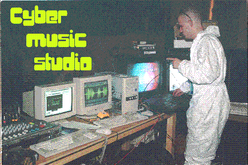

As Cyber Music Studio™ is not finished yet I wanted to make something already usable. This one is test of attempt to implement phase distortion synthesis.
Feel free to test it and report bugs here.
PD final: